Parceiros de Batalha
Personagens que se juntam ao jogador e podem realizar Fusão em combate. Cada parceiro tem uma Fita Assinatura e uma quest pessoal para desbloquear a Fusão. Todos, exceto Doginho, podem ser romanceados independente do gênero do jogador.
Kayleigh
Vigilante e Guia
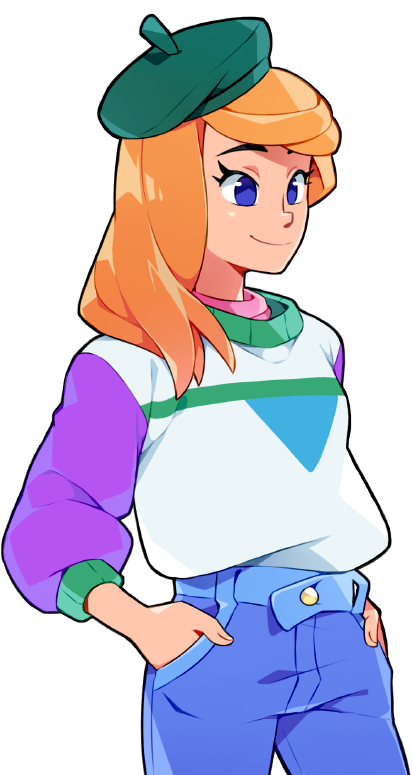
Kayleigh
Kayleigh é a primeira pessoa que o jogador encontra ao chegar em Nova Murta. Originária da Irlanda, é uma vigilante gentil e dedicada que quer o melhor para sua comunidade. Ela ensina o jogador a usar as fitas cassete e apresenta o sistema de batalha logo no início do jogo — sua Fita Assinatura, Sirenade, é o primeiro monstro que o jogador vê em ação.
Ao chegar em Nova Murta, Kayleigh viveu em Vila Luz, onde foi mão direita do líder do culto Dorian. Com o tempo, percebeu que o culto havia se corrompido e fugiu para Vilancoradouro, carregando culpa por não ter conseguido ajudar as pessoas que deixou para trás. Sua quest, Corri Tão Longe, a leva de volta a Vila Luz para enfrentar esse passado — confrontando Dorian e o Arcanjo escondido sob a cidade.
Serenata é uma criatura do Tipo Ar baseada nas sereias da mitologia grega: adora cantar e amplifica sua voz com a cauda em forma de microfone, sem se importar se está alta demais. É rápida e mortal, tornando-se ainda mais poderosa ao evoluir. A casa de Kayleigh em Vilancoradouro tem um tapete com o padrão da bandeira bissexual.
Eugene
Justiceiro
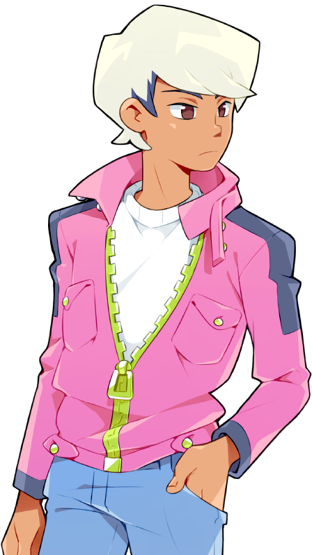
Eugene
Eugene se autoproclama o "Protetor de Vilancoradouro" e dedica seus esforços a eliminar os Corretores de Imóveis — agentes mortos-vivos de terno que tentam colonizar e explorar Nova Murta. É o parceiro mais entusiasmado com a transformação em monstros de toda a equipe, chegando a sonhar em levar essa tecnologia de volta ao seu mundo para beneficiar a sociedade.
Sua quest percorre múltiplos escritórios de Corretores espalhados pelo mapa — Colina do Outono, Mar do Pântano, Floresta de Eastham e Os Pântanos — culminando no confronto contra o Arcanjo Mammon no quartel-general deles. Após a derrota de Mammon, uma ex-Corretora chamada Allegra aparece em Vilancoradouro. Eugene também transforma um escritório no arrabalde de Vilancoradouro em uma horta comunitária ao atingir nível 5 de relacionamento.
Chavinhood começa fraco, mas após o remaster evolui para Robingun (inspirado em Robin Hood): altíssimo Ataque à Distância e o movimento único Ecolocalização, que permite atingir toda a equipe inimiga por três turnos — tornando-o um dos melhores atacantes do jogo.
Meredith
Barista e Estrategista
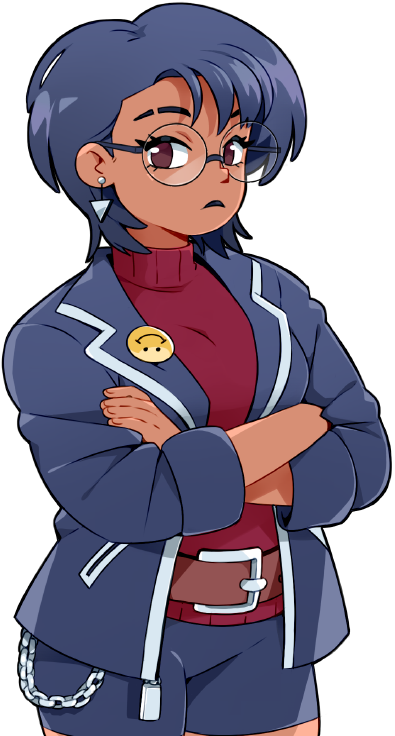
Meredith
Meredith é uma londrina sarcástica e antissocial que ocupa seu tempo consertando os eletrônicos de Vilancoradouro. Curte filmes de ação toscos e bandas com histórias trágicas — quanto mais dramático, melhor. Sua aparência fria esconde uma estrategista brilhante e uma aliada muito mais emocional do que parece.
Encontrada no Parque de Nova Murta perto do posto dos vigilantes, ela só se torna parceira após o jogador completar sua quest — que envolve resgatar seu disco favorito com a ajuda de Ianthe. A quest leva a uma área com monstros fortes e revela camadas emocionais inesperadas. Viola a descreve como "admirável" por sua autoconfiança fora dos padrões sociais.
Gatitela tem uma televisão na cabeça — perfeito para alguém obcecada com mídia. Após o remaster para Gategoria-5, torna-se uma das formas mais fortes entre todos os parceiros. Curiosidade: Meredith aparece nos trailers antigos do jogo transformada em Gategoria-5 no lugar de Kayleigh, pois a Sirenade foi criada apenas no final do desenvolvimento.
Felix
Artista
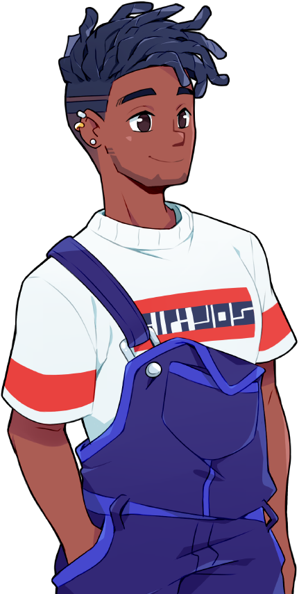
Felix
Felix é um artista relaxado e introspectivo encontrado nos restos de seu apartamento em Lakeside. Com lados raspados, brincos e macacão, há muito mais nele do que aparenta. Busca liberdade e viver nos próprios termos — trabalhar para si mesmo, sem amarras. Tem uma vibe mellow que contrasta com os outros parceiros mais intensos.
Sua quest pessoal, Não Quer Você?, é uma das mais tranquilas e emocionais do jogo — culmina no enfrentamento de Shining Kuneko, a única Arcanjo que não é absorvida por Aleph após a derrota. A quest revela também uma criação constrangedora de sua adolescência: uma personagem meio felina criada em sua mente de pré-adolescente, com um rapport cômico e tocante.
Pincemelo empunha um pincel e é do Tipo Planta — um dos mais fortes após o remaster. Felix é considerado um dos melhores parceiros para quem investe tempo nele, tanto em batalha quanto em história. Seu rapport com Viola sobre liberdade e aventura produz algumas das melhores trocas de diálogo do jogo.
Viola
Viajante e Tática
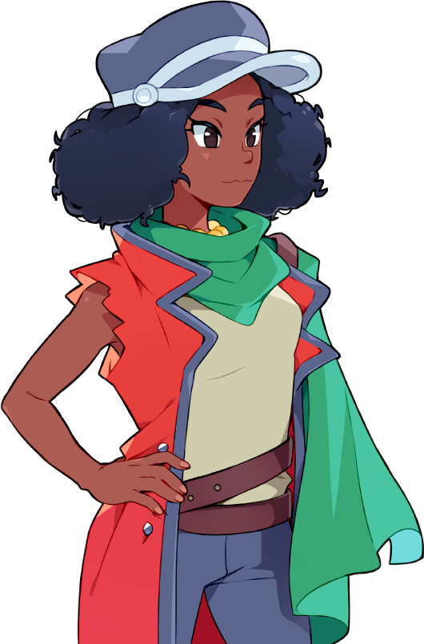
Viola
Viola é a última parceira desbloqueada no jogo. Aparece de forma misteriosa — como "Viola de Messaline" — ajudando o jogador em uma emboscada n'Os Pântanos, antes de se apresentar com um discurso shakespeariano. Individualista e com linguagem florida, é completamente diferente de todos os outros parceiros.
Seu passado é ligado à realeza e ao teatro, e ela está em Nova Murta buscando seu irmão, Sebastian — cujo espírito o jogador chega a ver. Sua quest, Todo Mundo Procura Algo, explora essa busca emocional. Ela ama debater filosofia e aventura com os companheiros. Meredith lhe empresta um livro de terror ("Contos Assombrosos") e Viola o leva a sério, extraindo lições sobre combate.
Diferente dos outros parceiros, Viola não tem +20% em um único atributo — distribui pequenos bônus em ataque corpo-a-corpo, defesa e velocidade. Espirueta é uma das Fitas Assinatura mais fortes, specializada em ataques rápidos. É necessário estar bastante avançado no jogo para desbloqueá-la.
Doginho
Leal Aventureiro
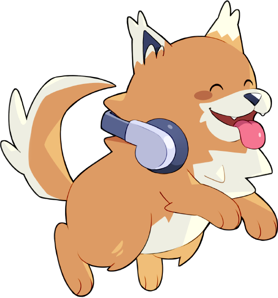
Doginho
Doginho é um Spitz Alemão de bom temperamento que aprendeu a usar fitas cassete para se transformar em monstros. Chegou a Nova Murta durante um passeio com seu dono — e perdeu o dono para uma criatura chamada Averevoir. Desde então busca ajuda para vingar essa perda e dar um enterro digno ao corpo.
Encontrado no nordeste do Prado da Cerejeira tentando escalar penhascos, ele só se torna parceiro quando o jogador tem a habilidade Bola de Cipó de Abóbora. Sua quest, Volte e Fique, é uma das mais emocionalmente pesadas do jogo: envolve subir os penhascos e enfrentar o Averevoir. A lealdade de Doginho é tão profunda que ele realiza Fusão com o jogador durante o clímax.
Ele é o único parceiro que não pode ser romanceado — é um cachorro. No final do jogo, enquanto os outros parceiros voltam para seus mundos, Doginho escolhe seguir o jogador. Seu ano de nascimento em uma lápide é listado como 14140 d.C. em anos de cachorro, provavelmente correspondente ao ano 2020.
Allegra
Ex-Corretora
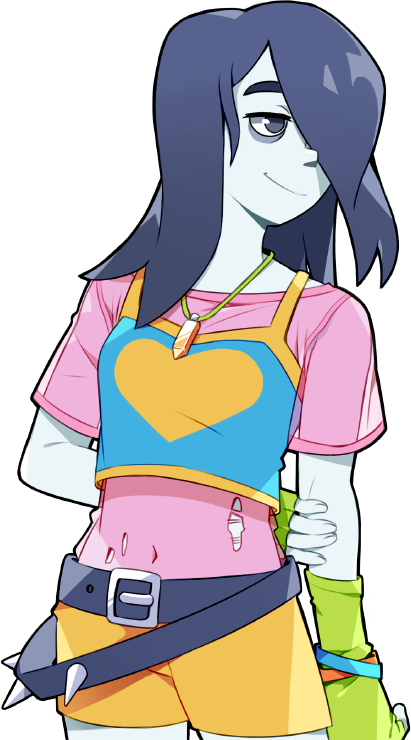
Allegra
Allegra surge em Vilancoradouro após a derrota de Mammon — uma ex-Corretora aparentemente "quebrada", desorientada e sem memória de quem ela é. Eugene a recebe com hostilidade, mas Kayleigh percebe que há algo errado e se oferece para ajudá-la a recomeçar. A identidade de Allegra começa do zero, inclusive com a escolha de uma nova roupa e do próprio nome.
Ela foi adicionada ao jogo como personagem tardio — o desenvolvedor Jay Baylis a propôs como uma história curta sobre o grupo reabilitando uma Corretora após a quest de Eugene. Sua quest, Pessoas São Pessoas, explora sua jornada de autodescoberta e quem ela é fora da organização que a moldou desde sempre.
Ao final do jogo, Allegra é a única parceira que escolhe ficar em Nova Murta, ciente de que partir é uma via de mão única e que provavelmente nunca mais encontrará os companheiros. Se Eugene não for romanceado, eles vão a um encontro, mas Allegra decide que ainda precisa de mais tempo para descobrir quem realmente é.
Comandantes Vigilantes
Os 12 Comandantes são os vigilantes mais experientes de Nova Murta, espalhados pela ilha inteira. Derrota-los todos, na quest Venha para Mim, concede ao jogador o título de Comandante Vigilante — após vencer o desafio final de Ianthe e Wilma juntas.
Ianthe
Líder dos Vigilantes
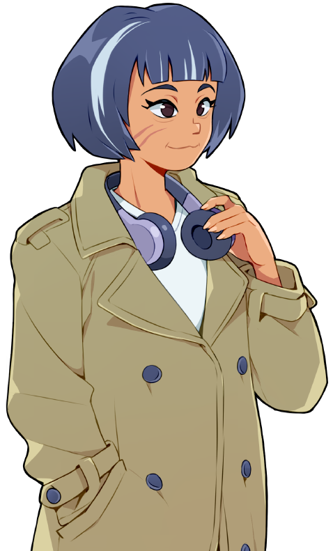
Ianthe
Ianthe é a líder dos Vigilantes de Vilancoradouro — referenciada pelos NPCs como a primeira pessoa na ilha a descobrir como gravar monstros com um toca-fitas cassete. Usa um trench coat bege e tem cabelo escuro com uma mecha cinza. Antes de chegar à ilha, trabalhava como detetive em uma megacidade cyberpunk, onde a vida era dura e a sobrevivência exigia endurecer o espírito.
É casada com Wilma, outra Vigilante. Quando o jogador derrota todos os 12 Comandantes, Ianthe oferece o desafio final: uma batalha simultânea contra ela e Wilma — o combate mais difícil de toda a quest. Ela usa Engrezilla enquanto Wilma usa Djinn-tônico, e eventualmente se fundem. A vitória concede o título de Comandante Vigilante e o Cartão de Vigilante completo. Seu nome vem de uma deusa das águas da mitologia grega.
Murilo
Comandante n.1
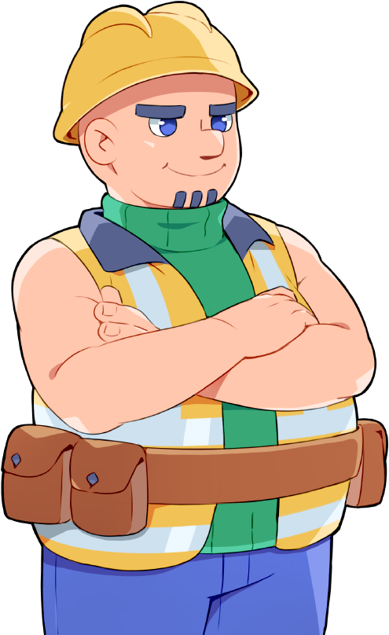
Murilo
Murilo é geralmente o primeiro Comandante enfrentado — encontrado numa plataforma elevada no Parque de Nova Murta, acessível com a habilidade Eletromagnetismo. Seu nome é um trocadilho com sua especialidade: construir Paredes Elementais para proteger seus monstros. Trabalha na construção e manutenção de estruturas de Vilancoradouro.
Na batalha usa Trafeguejo e Lagostáculo (Tipo Plástico) com um segundo Vigilante de apoio. Sua estratégia: erguer paredes, sacrificá-las com Arremessar para mais dano, e usar Revestimento Aquoso para mudar tipagens e neutralizar fraquezas. Movimentos que quebram ou ignoram paredes — como Nova Folha ou Ricochete — são eficazes contra ele. Na revanche traz Gorgumáforos e um Fungogh para um confronto mais difícil.
Cisco
Comandante n.2
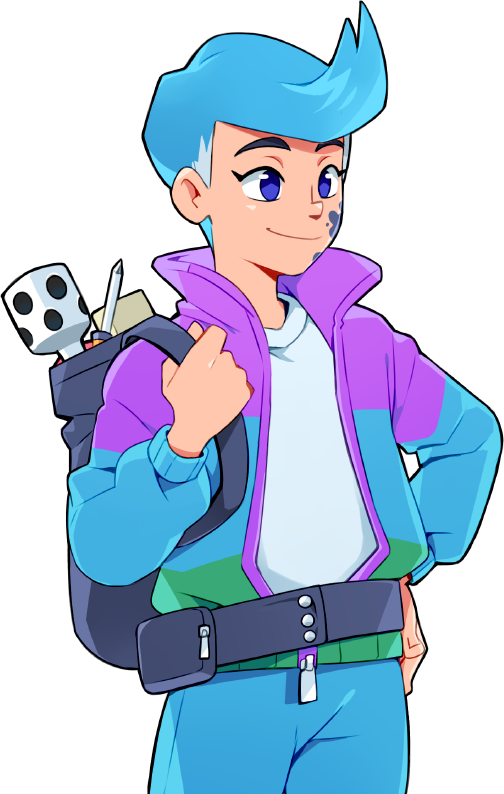
Cisco
Cisco é um dos Comandantes mais fáceis de derrotar — encontrado em Vilancoradouro Oeste logo após o jogador desbloquear essa área com a habilidade Corrida do Balazita. Seu nome é um trocadilho com o fato de que muitos jogadores o "pulam" acidentalmente (Cisco) por não notar sua presença logo na entrada da área oeste.
Apesar de ser o segundo na lista, sua batalha é considerada uma das mais tranquilas entre todos os 12 Comandantes. É um bom ponto de partida para jogadores que querem ganhar experiência e materiais fundidos antes de enfrentar oponentes mais desafiadores como Judas ou Codi.
Siesta
Comandante n.3
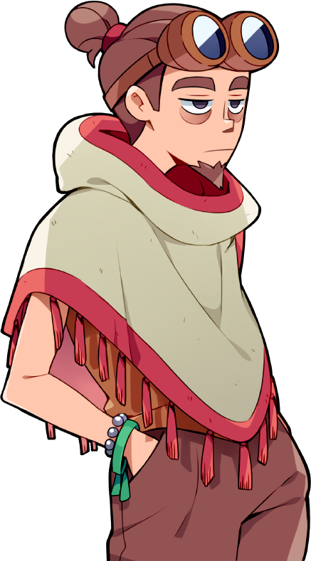
Siesta
Siesta é um Vigilante perpetuamente sonolento encontrado a leste da Colina do Outono, dormindo entre duas saliências perto de uma ponte estreita — procure as letras "ZzZz" acima da cabeça dele. Antes de aceitar o desafio, exige que o jogador complete a quest Disparo Disperso: derrotar 5 Balazitas selvagens na área.
Na batalha, usa Asterdígrado e Cosmosseto (ambos do Tipo Astral), que sempre usam o movimento Interceptado para absorver os ataques destinados ao segundo Vigilante que os acompanha — forçando o jogador a usar ataques em área para contornar essa defesa. Movimentos do Tipo Metal, Plástico e Veneno são eficazes contra Siesta. Derrotá-lo desbloqueia a conquista Dormindo no Trabalho.
Judas
Comandante n.4
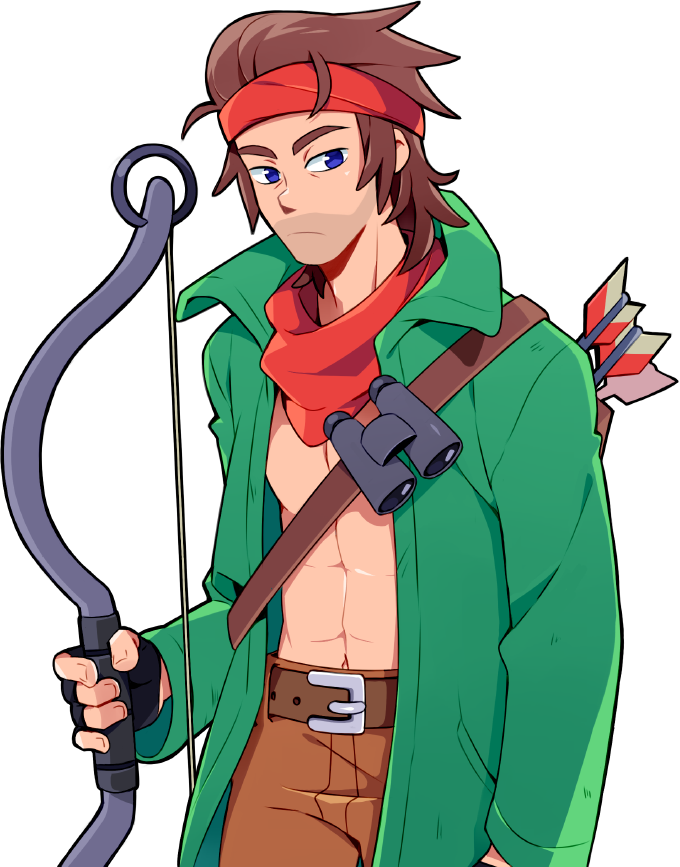
Judas
Judas fica nas Ilhas do Sul, acessível pela costa sul das Terras Mortas. É um dos Comandantes mais distantes e isolados do mapa — esperado em um pequeno pedaço de terra na ponta sudeste. O nível recomendado para enfrentá-lo é 30 ou mais, pois os monstros do bairro causam dano pesado.
Usa Manilança (Tipo Metal) e Gesqueleto, acompanhado de um segundo Vigilante com Dendileo — que passa o combate inteiro curando os monstros de Judas. Eliminar o Dendileo é prioridade máxima, mas ele tem m uito HP e é resistente. Tipos Fogo, Ar e Veneno são as melhores escolhas contra ele. A recompensa inclui o Adesivo de Ataque Preventivo.
Clee-0
Comandante n.5
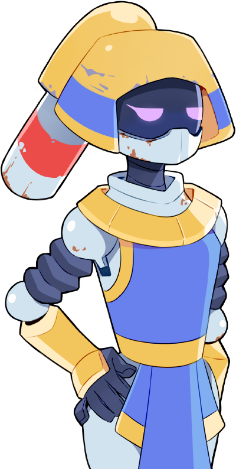
Clee-0
Clee-0 é encontrada desativada nos Bosques de Meandroleste — uma robô-garçonete que se tornou Vigilante depois de ganhar consciência. Para desafiá-la é preciso completar a quest Operada por Moeda: encontrar uma moeda escondida no mapa (a localização varia por save) e inseri-la no painel de Clee-0 para reativá-la.
Sua batalha é temática: usa Mascabus, que lança Apostas para aumentar massivamente seus próprios atributos por 3 turnos — mas depois é eliminada automaticamente. A estratégia é sobreviver aos 3 turnos com paredes defensivas sem tentar atacar, e então lidar com o restante da equipe. O jogador não precisa "vencer" o Mascabus, apenas aguardar.
Levi Magneticus
Comandante n.6
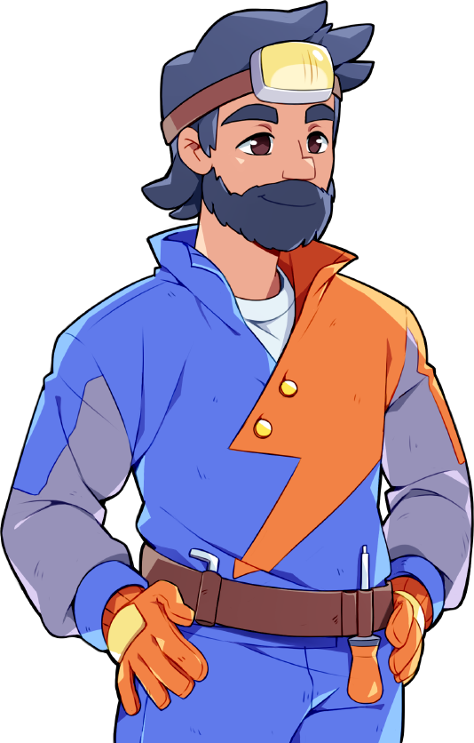
Levi Magneticus
Levi Magneticus fica em "Ham", o vale estreito a oeste dos Bosques de Meandroleste. Para chegar até ele é preciso puxar uma alavanca no centro da área que faz plataformas subirem rapidamente — o jogador precisa se posicionar sobre elas antes que se elevem, e depois usar Eletromagnetismo para se puxar até Levi Magneticus na plataforma seguinte.
Usa Asatriste e Plasmachifre (ambos Tipo Raio). O movimento mais perigoso é Bateria de Plasmachifre — com alcance múltiplo, pode causar dano pesado a toda a equipe. Tipos Terra, Planta, Plástico e Vidro são eficazes contra Raio. A recompensa inclui o Adesivo de Bateria.
Vitória Frankenstein
Comandante n.7
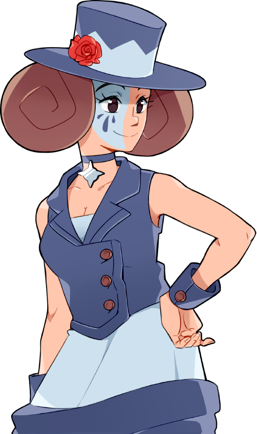
Vitória Frankenstein
Vitória Frankenstein fica nas Terras Mortas — acessível com Eletromagnetismo, usando um bloco azul suspenso a leste da Estação de Vilancoradouro. Seu nome é uma referência às publicações baratas de literatura de horror do século XIX britânico, adequado para quem vive num bioma chamado Terras Mortas.
O desafio mais complicado do seu combate é o Esquelevangelista: ele lança imediatamente o estado Fantasma em si mesmo, ficando invencível por 3 turnos antes de se autodestruir. Se o jogador lançar Berserk nele antes de ele agir, é possível cancelar o efeito. O Sanzatime que a acompanha deve ser eliminado o quanto antes, pois usa Anos de Cão para estender a duração do estado Fantasma.
Bellona
Comandante n.8
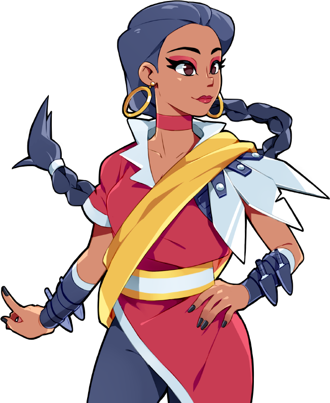
Bellona
Bellona fica no norte do Mar do Pântano, em uma plataforma que só pode ser alcançada ativando uma alavanca que faz o jogador flutuar até ela — o tempo é limitado, então é preciso se mover rápido. Seu nome é uma referência à flor gladíolo, condizente com o ambiente pantanoso ao redor.
Sua equipe é temática à área do Pântano e apresenta combinações de tipos que exploram o terreno aquoso. A batalha é moderadamente difícil e serve como transição para os Comandantes mais avançados da metade oeste do mapa. A recompensa inclui materiais raros usados nas melhorias do posto dos Vigilantes.
Celestina
Comandante n.9
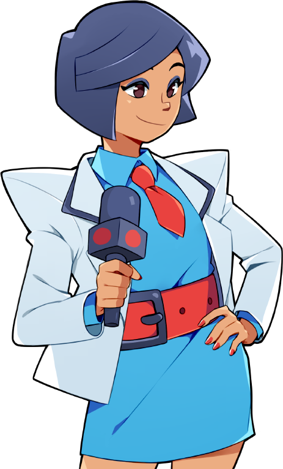
Celestina
Celestina é encontrada seguindo em frente a partir do acampamento do Mar do Pântano — sem puzzles complexos, apenas caminhada para o norte. É uma das Comandantes de acesso mais direto na parte oeste do mapa. Seu nome é uma referência à urze (heather), a planta típica das turfeiras e pântanos britânicos.
Sua batalha apresenta monstros de tipos variados com ênfase em debuffs e controle. É recomendável ter a equipe bem equipada com Adesivos de movimento em área antes de chegar até ela, pois seus acompanhantes têm sinergia entre si. A vitória rende bons Adesivos raros para uso na fase final do jogo.
Barbie
Comandante n.10
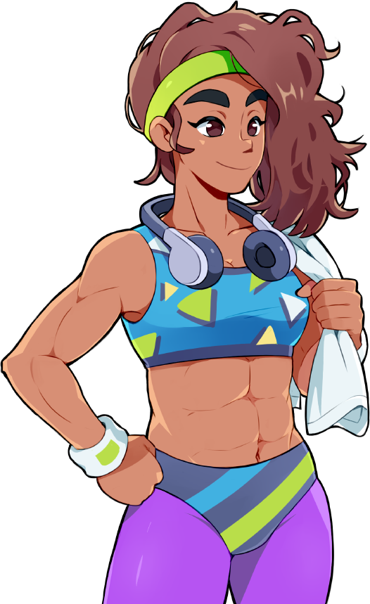
Barbie
Barbie é encontrada a leste do Prado da Cerejeira após usar Corrida do Balazita para quebrar uma rocha e acessar um redemoinho. De lá, o jogador caminha sobre as muralhas do Prado, sobe uma ponte por alavanca e chega até ela. Seu nome é uma referência à personagem Barbie Summers, a caçadora de vampiros.
Seu combate é um dos mais traiçoeiros entre os 12: o Dendileo fica fornecendo PA ao Vitoré continuamente. Quando a barra de PA do Vitoré enche, ele usa Últimos Ritos — que elimina um monstro com um único golpe. A prioridade absoluta é matar o Dendileo rápido com Fogo, Ar ou Veneno antes que o Vitoré carregue sua barra. Depois vem Krampugento.
Sibila
Comandante n.11
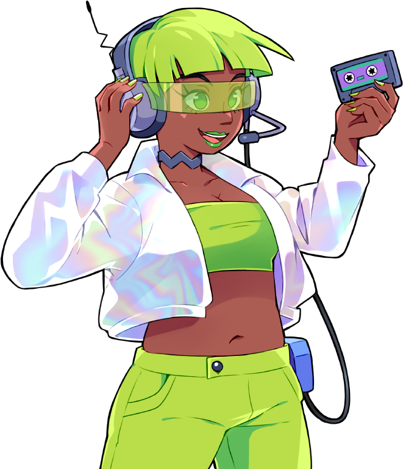
Sibila
Sibila é encontrada nas encostas do Pântano, numa área acessível apenas para jogadores que já desbloquearam habilidades avançadas de mobilidade. Fica próxima de Codi, o último Comandante, tornando o Monte Wirral uma parada obrigatória para finalizar o cartão de vigilante.
Seu combate apresenta monstros de tipos avançados condizentes com o ambiente frio e elevado do Monte Wirral. É recomendável ter o time no nível 50 ou superior antes de chegar até ela, pois esta região já é território da fase final do jogo. A batalha de revanche pós-título de Comandante é consideravelmente mais difícil.
Codi
Comandante n.12
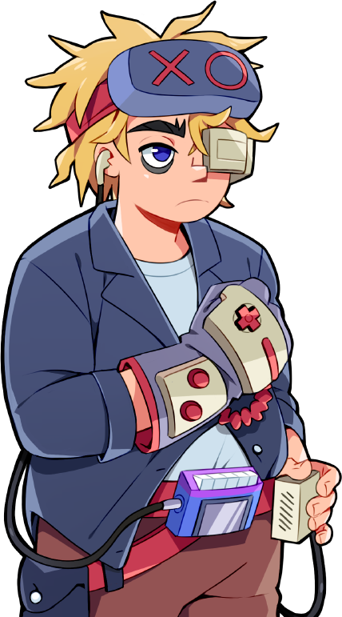
Codi
Codi é o último Comandante — encontrado nas falésias leste do Monte Murta, perto de uma cachoeira. É acessível apenas com a habilidade Bola de Cipó de Abóbora, obtida na Fazenda Piper. Tem um jeito de falar estranho e menciona assuntos "suspeitos" que levam o jogador a preferir manter distância após a batalha.
Sua especialidade são os Embustes — versões de monstros com tipos diferentes do normal. O Arkidd pode converter os monstros do jogador para o Tipo Purpurina com Bomba de Purpurina, dificultando o controle de fraquezas. O Apocrowlypse transforma monstros em Tipo Vidro e então usa Ressonância para eliminá-los. Priorize o Apocrowlypse antes que o Artilhanossauro entre em batalha.
Dorian
Líder do Culto
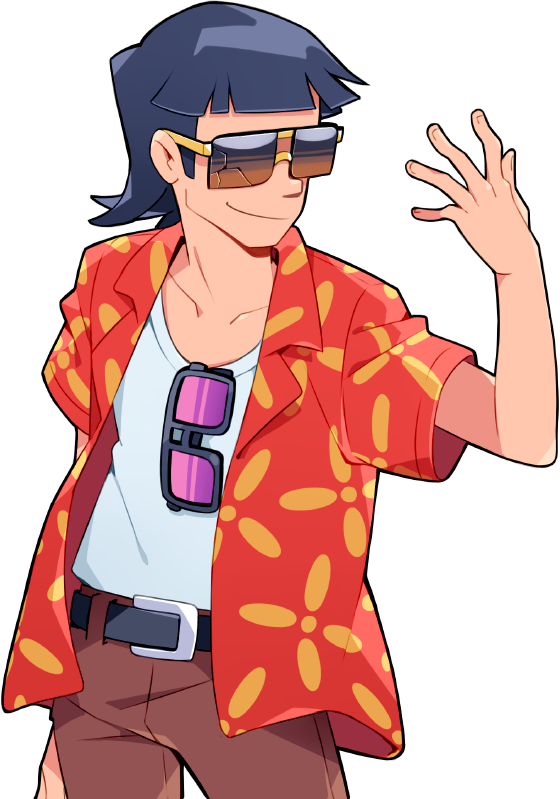
Dorian
Dorian é o carismático e manipulador líder do culto instalado em Vila Luz, uma comunidade fortificada no topo da Colina do Outono, onde os habitantes vestem mantos encapuzados e atacam estranhos ao avistá-los. Ele fundou a comunidade com a intenção original de ajudar a todos — mas o projeto degenerou em algo centrado em seus objetivos pessoais e sua obsessão pelos Arcanjos.
Kayleigh foi sua mão direita antes de fugir com vergonha. Na quest Corri Tão Longe, o jogador retorna a Vila Luz com ela para confrontar Dorian e o Arcanjo escondido sob a cidade: Portaluz, um ser grotesco com crânio dourado, asas de pássaro, chifres de carneiro, uma cobra preto-e-branco e pernas de espinhos amarelos. O Portaluz contribui com parte da música de Morgante ao ser derrotado.
Arcanjos e Entidades
Os Arcanjos são seres eldritch criados a partir dos desejos mais poderosos da humanidade — guerras, conquistas, rebelião. Derrotá-los desbloqueia partes da música de Morgante, necessária para encontrar a saída de Nova Murta. Aleph absorve cada Arcanjo derrotado para montar seu exército.
Morgana
Arcanjo da Rebelião
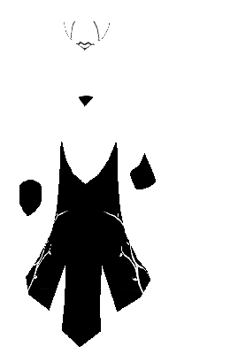
Morgante
Morgante é o primeiro Arcanjo encontrado pelo jogador — gravemente ferida dentro da Estação de Vilancoradouro, aparecendo como uma figura preto e branco em vestido flutuante. Apesar de estar no nível 100, sua condição debilitada a deixa com apenas 19 HP no primeiro encontro e dois movimentos disponíveis. Ela já foi uma das entidades mais poderosas de toda a realidade conectada.
Como encarnação da Rebelião e arqui-inimiga de Aleph , seus destinos sempre colidiram. Aleph matou o filho dela, Mordread, e Morgante travou uma batalha para forçá-lo a ficar preso em Nova Murta — até que Aleph a venceu. Ela escondeu a localização da saída da ilha nas palavras de uma música, revelada conforme o jogador derrota os outros Arcanjos.
No clímax do jogo, Morgante se funde com o jogador e todos os parceiros que completaram suas quests para formar o Morgante Gestalt (A03), destruindo Aleph Nulo de uma vez. No pós-jogo, ela se volta contra o jogador — por sua própria natureza rebelde — e sua derrota serve de sacrifício para ressuscitar os Arcanjos derrotados.
Magikaranguejo
Emissário do Mer-Line
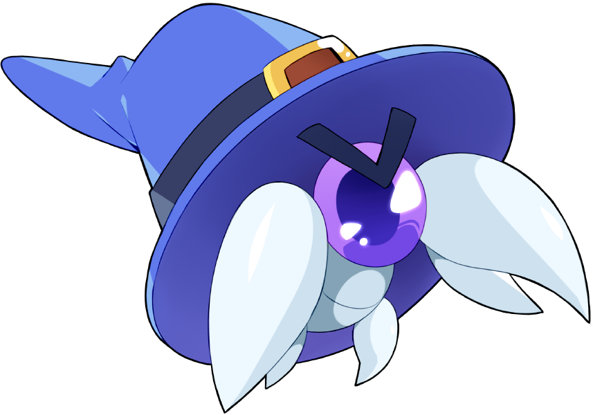
Magikaranguejo
Magikaranguejo é um indivíduo da espécie Magikaranguejo que serve como emissário da entidade misteriosa chamada The Mer-Line — a rede subterrânea de estações ferroviárias que conecta Nova Murta e pontos além da realidade. O Mer-Line não fala com mortais; Magikaranguejo foi escolhido como intermediário para gerenciar viagens e informações.
Presente em praticamente todas as estações do jogo, ele gerencia a Plataforma A (viagem rápida entre estações de Nova Murta) e a Plataforma B (viagens interdimensionais, bloqueadas por 642 anos segundo o Mer-Line). Magikaranguejo tem um jeito peculiarmente servil mas perspicaz — alerta o jogador que Arcanjos sempre têm motivos ocultos, mesmo os que parecem aliados.
É possível obter o próprio Magikaranguejo como monstro ao realizar o remaster de um Trafeguejo embuste do Tipo Astral — ele aparece no Bestiário como monstro #000, antes de qualquer outro.
Você pode adiquirir o Magikaranguejo ao chegar no nível máximo de Fita, de um Trafeguejo como Embuste do tipo Astral
Aleph
O Antagonista
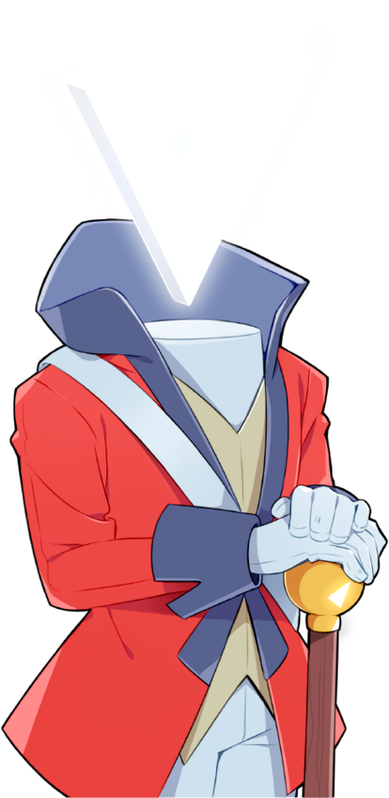
Aleph
Aleph é o vilão principal de Cassette Beasts — o Arcanjo A14, encarnação da Conquista, nascido da natureza belicosa da humanidade e do desejo de dominar. Veste um casaco vermelho (inspirado diretamente no uniforme histórico dos soldados britânicos) e tem uma cabeça de espelho triangular flutuante que permite enviar qualquer coisa para qualquer lugar — exceto a si mesmo, o que o manteve preso em Nova Murta.
Um dia liderou uma tropa de Arcanjos pelos mundos conectados — incluindo Morgante, Ms. Amber e Mordread — tornando-se parte de lendas como a Matéria de Bretanha (inspiração arturiana direta). Os desenvolvedores quiseram subverter o tropo do "Rei Legítimo" criando um Artur que reflete a história de conquistas do império britânico. Após disputas com Morgante, ficou preso em Nova Murta.
O confronto final é triplo e consecutivo: primeiro Aleph sozinho, depois como Aleph Nulo (fundido com todos os Arcanjos absorvidos), e por fim contra o Morgante Gestalt. Ao ser derrotado, Aleph morre — mas como encarnação da Conquista, pode retornar enquanto a humanidade continuar guerreando.